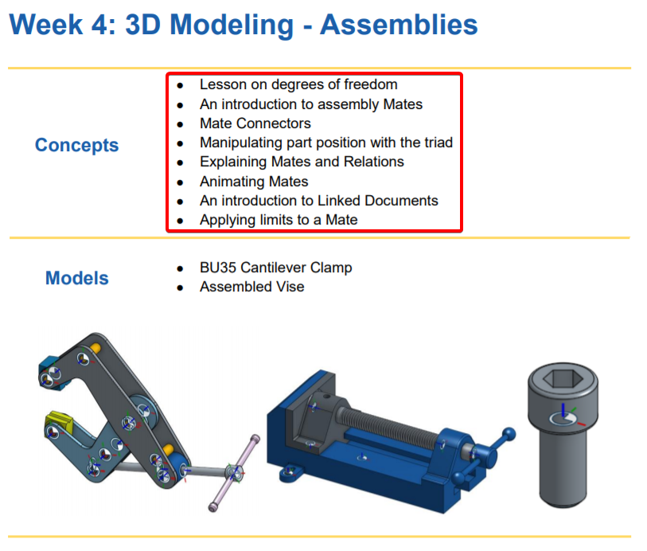
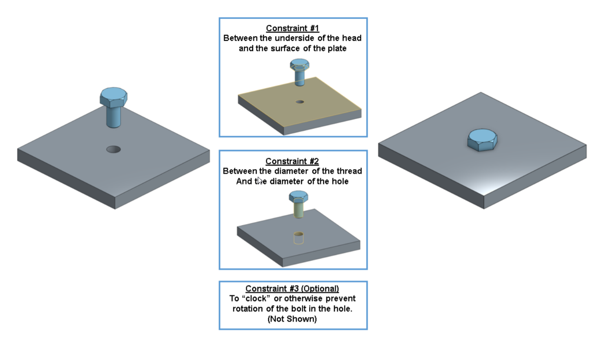
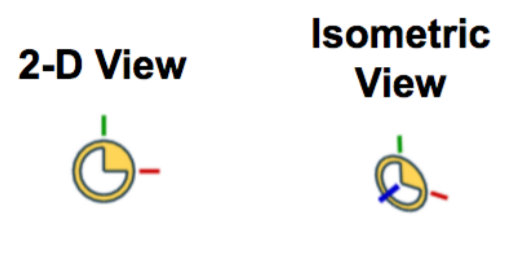
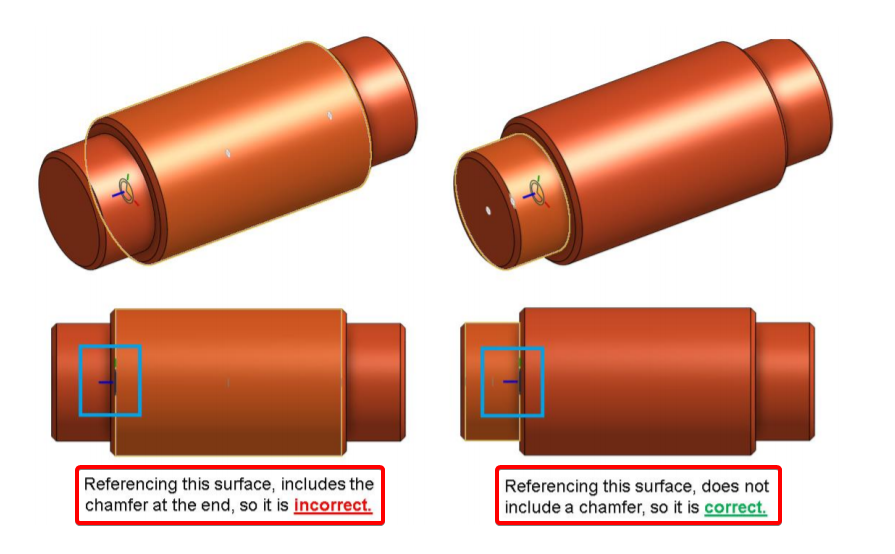

3D模型 - 裝配


約束1 : 約束螺栓頭的底部與板的頂部表面共面。
約束2 : 約束螺栓的直徑與板中孔的直徑同心（同軸）。
約束3 : 約束/防止螺栓在孔內旋轉（這是可選的）。
You can think of a Mate Connector as a small, local coordinate(座標) system (an x, y, and z axis) for a joint between two parts. The Red line is the X-axis, the Green is the Y, and the Blue is the Z. The Blue axis usually points in the axis of circular and cylindrical components(組件). 
Animations are a great way to view the motion of your Mate before accepting it. Onshape will automatically move the Mate in a way that will exercise the Degrees of Freedom. In a Revolute Mate the part will rotate, in a Slider Mate, the part will slide, in a Cylinder Mate, the part will slide and rotate, etc.
Be careful when selecting the Mate Connector location on the Pins. In this case, there is a chamfer on the outer diameter. You may be inclined to(傾向於) select the Outer Diameter as the reference for the Mate Connector, but because of the chamfer, the Mate Connector would be in the wrong location (it would be offset by the width of the chamfer). In this case(在這種情況下), it is best to reference the Smaller Diameter, or even the edge itself

A relation is a way in Onshape to constrain degrees of freedom between two Mates. Where a Mate controls how many degrees of freedom a pair of parts has between them, a Relation can control how those degrees of freedom move with respect to each other. There are 4 types of Relations in Onshape: Gear, Rack and Pinion, Screw, and Linear. These relations rely(依靠) on preexisting(預先存在的) Mates to define the type of motion that will occur between two parts.
Let’s take a second to reflect what we learned in this lesson.
1. We learned about degrees of freedom and how mates limit the part’s degree of freedom.
2. We learned about Mate Connectors and how to use them to mate two parts together.
3. We learned how to move parts within an assembly using the triad manipulator(機械手).
4. We learned that you can animate the Mate in Onshape.
5. We were introduced to the 4 types of Relations in Onshape: Gear(齒輪), Rack(齒條) and Pinion(小齒輪), Screw(螺釘), and Linear.
6. We learned that you can add limits to Mates.
Next week, we will be switching gears and will introduce Engineering Drawings, how to make them in Onshape, and why they are useful in the manufacturing process.
Q : What is the difference between a fixed and a moveable assembly in Onshape?
A : A Fixed assembly is created using the Top-Down Design method in a Part Studio and is static(靜態的), while a Moveable assembly is built in an Assembly tab using Mates and can be used to visualize motion(可視化運動).
Q : What is so unique about the Mate Connector in Onshape?
A : It is a single feature which allows for the full definition of all 6 degrees of freedom(自由度). It is the bases for how mates are defined.
Q : How many degrees of freedom do the following Mates have:
A : Fastened (緊固)- 0
Revolute - 1
Slider - 1
Planar - 3
Cylindrical - 2
Ball - 3
Q : When a mate is initially defined, does Onshape solve the entire model, or just that mate?
A : Just that mate.
Q : What is a Relation? Provide 2 examples.
A : It allows degrees of freedom to be defined between two existing mates. Examples are
Gear(齒輪), Rack(齒條) & Pinion(小齒輪), Screw(螺釘), and Linear.